Cheat Sheet 解读 · 第3面右栏 · 代数例题
本章逐项知识清单
- 01 · 解读 p3-c3-01 · ED
- 02 · 解读 p3-c3-02 · ED ⇒ PID
- 03 · 解读 p3-c3-03 · PID 中不可约 ⇒ 素
- 04 · 解读 p3-c3-04 · 理想链
- 05 · 解读 p3-c3-05 · Artin 整环是域
- 06 · 解读 p3-c3-06 · 非 PID
- 07 · 解读 p3-c3-07 · 矩阵环
- 08 · 解读 p3-c3-08 · 群环/四元数
- 09 · 解读 p3-c3-09 · 添根不是“代入任意数”
- 10 · 解读 p3-c3-10 · 四元域
- 11 · 解读 p3-c3-11 · 二次扩张求逆
- 12 · 解读 p3-c3-12 · 同构例（旧期中题型
- 13 · 解读 p3-c3-13 · Frobenius gcd
- 14 · 解读 p3-c3-14 · 不可约式的根
- 15 · 解读 p3-c3-15 · 分解三步
- 16 · 解读 p3-c3-16 · 15 阶群
- 17 · 解读 p3-c3-17 · Sylow 包含性证明
- 18 · 解读 p3-c3-18 · 有限扩张未必 Galois
- 19 · 解读 p3-c3-19 · 双二次扩张
- 20 · 解读 p3-c3-20 · 三次例
- 21 · 解读 p3-c3-21 · 高次反例
按四面速查表第 3 面右栏的项目符号逐条对应。每条先保留原文，再展开所需概念，证明与推导在内层。原文图片可放大查看。条目编号只用于对照，没有改动原 PDF。
对照阅读顺序
解读34.01 p3-c3-01 · ED
速查表原文（第1条）
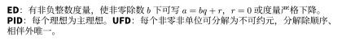
逐句阅读要点
先按原文的分号与句号分开读。下面按相关概念展开条件、记号与结论；遇到公式，先确认变量范围，再看证明中怎样得到等号或蕴含。
1．定义 Euclid 整环、PID 与 UFD
- 统一假设：以下三类环都首先要求是整环。
- Euclid 整环：存在函数 ，使对每个 、，存在 满足 ，且 或 。它保证余数的度量严格下降。
- 主理想整环（PID）：。这里量化的是所有理想，而不仅是有限个元素生成的理想。
- 唯一分解整环（UFD）：存在性：对每个非零非单位 ，存在 、 和不可约元 ，使 。
- UFD：唯一性：若同一元素又有 ，其中各 不可约，则 ，且存在排列 使 。因此“唯一”允许交换顺序和乘单位，不要求书写完全相同。
2．定理 Euclid 整环 ⇒ PID ⇒ UFD
- 假设与结论：在整环范围内，Euclid 整环必为 PID，PID 必为 UFD。
- 证明分工：带余除法给出“每个理想有一个生成元”；理想升链条件给出“有限不可约分解存在”；不可约元的素性给出“分解唯一”。
为什么成立：证明、推导与边界
定义 Euclid 整环、PID 与 UFD
- 例子： 可取 ；域 上的 可取 。两者都是 Euclid 整环，进而是 PID 和 UFD。
- 唯一性的读法： 是同一个不可约分解类型，因为 。
- 层级：Euclid 整环 PID UFD。 是 UFD，但理想 不是主理想，所以它不是 PID。
- 不能偷换条件：无零因子只允许消去非零因子，不自动保证分解存在，也不自动保证不可约元具有素性。
定理 Euclid 整环 ⇒ PID ⇒ UFD
- Euclid 整环推出 PID：零理想由 生成。对非零理想 ，在 中取 最小的 ，这一步使用非负整数的良序性。
- 任意元素都被 整除：对 ，作 。若 ，则 且 ，矛盾。所以 ，从而 。又 给 ，故 。
- PID 推出有限分解存在：PID 满足 ACC，故满足 ACCP，排除无限真因子链；具体构造见后面的分解证明。
- PID 中不可约元为素元：若 不可约，任何包含 的理想都可写为 。由 ，不可约性迫使 或 是单位，故 或 。所以 是极大理想，继而是素理想；即 是素元。
- 得到唯一性：在两个不可约分解中，素元必须整除对方某个不可约因子，从而相伴；逐个消去即可。完整的量词与消去步骤见“PID 中分解存在性与唯一性的展开”。
解读34.02 p3-c3-02 · ED ⇒ PID
速查表原文（第2条）
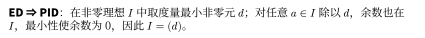
逐句阅读要点
先按原文的分号与句号分开读。下面按相关概念展开条件、记号与结论；遇到公式，先确认变量范围，再看证明中怎样得到等号或蕴含。
1．例题 理想生成与 Z[x] 不是 PID
-
交换环中 。
-
在 中，理想 不是主理想。
2．定义 Euclid 整环、PID 与 UFD
- 统一假设：以下三类环都首先要求是整环。
- Euclid 整环：存在函数 ，使对每个 、，存在 满足 ，且 或 。它保证余数的度量严格下降。
- 主理想整环（PID）：。这里量化的是所有理想，而不仅是有限个元素生成的理想。
- 唯一分解整环（UFD）：存在性：对每个非零非单位 ，存在 、 和不可约元 ，使 。
- UFD：唯一性：若同一元素又有 ，其中各 不可约，则 ，且存在排列 使 。因此“唯一”允许交换顺序和乘单位，不要求书写完全相同。
为什么成立：证明、推导与边界
例题 理想生成与 Z[x] 不是 PID
-
若 ，则 ，次数比较说明 是常数，且为 之一。
-
又 ，排除 ，所以 只能是单位。
-
于是理想应为全环，特别应含 。
-
但 中多项式代入 后总得到偶数，所以不可能含 。
-
矛盾。
-
这个例子也说明：UFD 不一定是 PID，因为 是 UFD。
定义 Euclid 整环、PID 与 UFD
- 例子： 可取 ；域 上的 可取 。两者都是 Euclid 整环，进而是 PID 和 UFD。
- 唯一性的读法： 是同一个不可约分解类型，因为 。
- 层级：Euclid 整环 PID UFD。 是 UFD，但理想 不是主理想，所以它不是 PID。
- 不能偷换条件：无零因子只允许消去非零因子，不自动保证分解存在，也不自动保证不可约元具有素性。
解读34.03 p3-c3-03 · PID 中不可约 ⇒ 素
速查表原文（第3条）
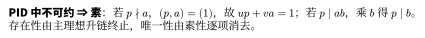
逐句阅读要点
先按原文的分号与句号分开读。下面按相关概念展开条件、记号与结论；遇到公式，先确认变量范围，再看证明中怎样得到等号或蕴含。
1．定理 PID 中分解存在性与唯一性的展开
- 假设： 为 PID， 非零且不是单位。
- 存在性结论：，其中 、，每个 不可约。
- 唯一性结论：若 是另一不可约分解，则 ，并可重排使 。
2．例题 理想生成与 Z[x] 不是 PID
-
交换环中 。
-
在 中，理想 不是主理想。
为什么成立：证明、推导与边界
定理 PID 中分解存在性与唯一性的展开
- 反设存在不能分解的元素：令 。 不能不可约，否则它自身就是长度为 的分解。所以可写 ，两因子均非单位。
- 挑出下一项： 不可能都能有限分解，否则拼接两者的分解就得到 的有限分解。选一个仍不能分解的因子为 ，另一因子记为 ，于是 且 非单位。
- 验证严格性：有 。若相等，则 ；由于 ，消去得 ，与 非单位矛盾。因此 。
- 推出存在性：重复构造得到无限严格理想升链，违反 PID 的 ACC。因此不存在这样的 ，有限不可约分解存在。
- 补上素性：PID 中不可约元生成极大理想，因此为素元；其证明见上一条。这是唯一性另外需要的性质，并非单靠终止得到。
- 比较两个分解：由 ，素元 不整除单位 ，故它整除某个 。重排令 ，写 。 不可约且 非单位，故 为单位。
- 消去与归纳：消去非零 ，把 并入单位因子，继续比较剩余分解。若一边先耗尽，另一边的非空不可约乘积就等于单位；但乘积可逆会迫使每个因子可逆，矛盾。因此两边同时耗尽，，对应因子相伴。
例题 理想生成与 Z[x] 不是 PID
-
若 ，则 ，次数比较说明 是常数，且为 之一。
-
又 ，排除 ，所以 只能是单位。
-
于是理想应为全环，特别应含 。
-
但 中多项式代入 后总得到偶数，所以不可能含 。
-
矛盾。
-
这个例子也说明：UFD 不一定是 PID，因为 是 UFD。
解读34.04 p3-c3-04 · 理想链
速查表原文（第4条）
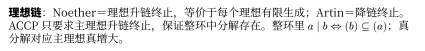
逐句阅读要点
先按原文的分号与句号分开读。下面按相关概念展开条件、记号与结论；遇到公式，先确认变量范围，再看证明中怎样得到等号或蕴含。
1．定义 理想链、因子链与分解终止
-
统一假设： 是交换含幺环。讨论非零元素的整除、相伴与真因子链时，进一步要求 是整环。下标均取 。
-
理想升链：理想序列 满足 对每个 成立，即
-
“最终稳定”的精确定义：存在某个有限下标，从那一项开始，后面所有理想都与它相等：
可以依赖这条链。它不要求一开始相等，也不要求环内所有链共用一个 。
-
升链条件（ACC）： 的每条理想升链都最终稳定。量词顺序是“对每一条链，存在该链的稳定下标”，而非“存在统一下标，适用于所有链”。
-
降链条件（DCC）：对每条 ，都存在 使 。包含方向改变，稳定的含义不变。
-
主理想升链条件（ACCP）：只要求每条由主理想组成的升链 最终稳定。ACC 推出 ACCP，定义上二者检查的对象不同。
-
非零真因子：若 ， 且 ，则称 为 的真因子。等价地， 中的余因子 不是单位。
-
无限真因子链：非零元素序列 满足 且 。它对应严格升链
2．定理 链条件与整环的 Artin 条件
- 第一项结论：每个 PID 都满足 ACC：每条理想升链最终稳定。
- 第二项结论：若整环 满足 DCC（也称这里的 Artin 条件），则 是域。
- 区别：ACC 和 DCC 不是同一条件；整数环 满足 ACC，但不满足 DCC。
为什么成立：证明、推导与边界
定义 理想链、因子链与分解终止
- 稳定例子：在 中取 、、（）。则 可作稳定下标，因为 。
- 一个相等处不够： 的前两项相等，却不能以 声称稳定；必须确认其后所有项都相等。
- 不稳定例子： 是整数环中永不稳定的降链。因此 不满足 DCC，尽管它满足 ACC。
- 方向核对： 给出 ；而 ，故包含严格。因子在数值上可能变小，但它生成的理想按集合包含变大。
- ACCP 的等价读法：整环满足 ACCP 当且仅当不存在无限非零真因子链。如果主理想升链不稳定，就能不断选取下一次严格增大的项，抽出一条严格升链；零理想至多是初始的一项，不影响这个对应。
定理 链条件与整环的 Artin 条件
- 证明 ACC：构造并集。给定理想升链 ，令 。若 ，取 ，则 ；若 ，则 。所以 是理想。
- 使用 PID 假设。存在 使 。因为 ，按并集定义存在有限下标 使 。
- 得到稳定下标。对每个 ，有 ，故 。这正是 的稳定条件。
- 证明 DCC 推出域。任取 ，考虑 。DCC 给某个 满足 。
- 从相等理想求逆。存在 使 。整环中 ，可消去它，得到 。任意非零 均可逆，所以 为域。
解读34.05 p3-c3-05 · Artin 整环是域
速查表原文（第5条）
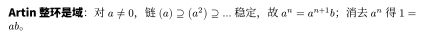
逐句阅读要点
先按原文的分号与句号分开读。下面按相关概念展开条件、记号与结论；遇到公式，先确认变量范围，再看证明中怎样得到等号或蕴含。
1．定理 链条件与整环的 Artin 条件
- 第一项结论：每个 PID 都满足 ACC：每条理想升链最终稳定。
- 第二项结论：若整环 满足 DCC（也称这里的 Artin 条件），则 是域。
- 区别：ACC 和 DCC 不是同一条件；整数环 满足 ACC，但不满足 DCC。
2．定理 有限整环必是域
- 假设： 是有限整环，即 、，乘法交换且无零因子。
- 结论：；因此 为域。
为什么成立：证明、推导与边界
定理 链条件与整环的 Artin 条件
- 证明 ACC：构造并集。给定理想升链 ，令 。若 ，取 ，则 ；若 ，则 。所以 是理想。
- 使用 PID 假设。存在 使 。因为 ，按并集定义存在有限下标 使 。
- 得到稳定下标。对每个 ，有 ，故 。这正是 的稳定条件。
- 证明 DCC 推出域。任取 ，考虑 。DCC 给某个 满足 。
- 从相等理想求逆。存在 使 。整环中 ，可消去它，得到 。任意非零 均可逆，所以 为域。
定理 有限整环必是域
- 固定待求逆元素：任取 ，考虑 ，。
- 证明单射：，最后一步用到了无零因子。
- 使用有限性：有限集到自身的单射必为满射，故 有原像 ，即 ；交换性给 。
- 为何不能删去有限性：在 中， 单射但不满射， 没有整数原像。
解读34.06 p3-c3-06 · 非 PID
速查表原文（第6条）
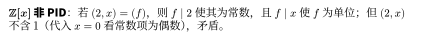
逐句阅读要点
先按原文的分号与句号分开读。下面按相关概念展开条件、记号与结论；遇到公式，先确认变量范围，再看证明中怎样得到等号或蕴含。
1．例题 理想生成与 Z[x] 不是 PID
-
交换环中 。
-
在 中，理想 不是主理想。
2．定理 PID 中分解存在性与唯一性的展开
- 假设： 为 PID， 非零且不是单位。
- 存在性结论：，其中 、，每个 不可约。
- 唯一性结论：若 是另一不可约分解，则 ，并可重排使 。
为什么成立：证明、推导与边界
例题 理想生成与 Z[x] 不是 PID
-
若 ，则 ，次数比较说明 是常数，且为 之一。
-
又 ，排除 ，所以 只能是单位。
-
于是理想应为全环，特别应含 。
-
但 中多项式代入 后总得到偶数，所以不可能含 。
-
矛盾。
-
这个例子也说明：UFD 不一定是 PID，因为 是 UFD。
定理 PID 中分解存在性与唯一性的展开
- 反设存在不能分解的元素：令 。 不能不可约，否则它自身就是长度为 的分解。所以可写 ，两因子均非单位。
- 挑出下一项： 不可能都能有限分解，否则拼接两者的分解就得到 的有限分解。选一个仍不能分解的因子为 ，另一因子记为 ，于是 且 非单位。
- 验证严格性：有 。若相等，则 ；由于 ，消去得 ，与 非单位矛盾。因此 。
- 推出存在性：重复构造得到无限严格理想升链，违反 PID 的 ACC。因此不存在这样的 ，有限不可约分解存在。
- 补上素性：PID 中不可约元生成极大理想，因此为素元；其证明见上一条。这是唯一性另外需要的性质，并非单靠终止得到。
- 比较两个分解：由 ，素元 不整除单位 ，故它整除某个 。重排令 ，写 。 不可约且 非单位，故 为单位。
- 消去与归纳：消去非零 ，把 并入单位因子，继续比较剩余分解。若一边先耗尽，另一边的非空不可约乘积就等于单位；但乘积可逆会迫使每个因子可逆，矛盾。因此两边同时耗尽，，对应因子相伴。
解读34.07 p3-c3-07 · 矩阵环
速查表原文（第7条）
逐句阅读要点
先按原文的分号与句号分开读。下面按相关概念展开条件、记号与结论；遇到公式，先确认变量范围，再看证明中怎样得到等号或蕴含。
1．例题 矩阵环的双边理想为何只有两个
- 若 为域，则 的双边理想只有 与全环，虽然 时它有零因子且不交换。
2．定义 子环、环同态、单位群与零因子
- 含幺子环： 满足 ，且 有 、。子环的加乘沿用 的运算，乘法单位元沿用 。
- 含幺环同态： 满足 ，、，并且 。
- 核与像：，。核为双边理想，像为含幺子环。
- 单位的像：若 ，则 ，故 。反向一般不成立。
- 零因子：在交换环中， 为零因子，指 且 使 。在非交换环中须分别说明左、右零因子。
为什么成立：证明、推导与边界
例题 矩阵环的双边理想为何只有两个
-
设双边理想含非零矩阵 ，取 。
-
矩阵单位满足 。
-
因为允许左右任意乘矩阵，再乘标量 ，理想含全部 ，所以含任意矩阵。
-
这不意味着矩阵环是域。
-
前面的“极大理想商为域”判别要求交换含幺环；此处得到的是非交换意义的单环。
定义 子环、环同态、单位群与零因子
- 模 的检验： 中 ，因为 。、，故非零零因子为 。
- 注意零的约定：本章按定义不把 本身称为零因子；这不影响“无零因子”的整环判据。
- 非单位未必是零因子： 没有整数乘法逆元，但 。
- 单位的逆向反例：嵌入 把非单位 送到单位 。
解读34.08 p3-c3-08 · 群环/四元数
速查表原文（第8条）
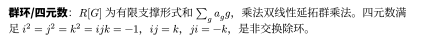
逐句阅读要点
先按原文的分号与句号分开读。下面按相关概念展开条件、记号与结论；遇到公式，先确认变量范围，再看证明中怎样得到等号或蕴含。
1．定义 除环、四元数与术语约定
-
除环：含幺环 满足 且 ；不要求乘法交换。
-
与域的区别： 为域当且仅当 是乘法交换的除环。本章的“整环”始终要求交换。
-
实四元数：，以 为实向量空间基，并规定
-
规则的范围：上式规定特定基元素的乘积，不表示任意 都满足 。
2．定义 多项式环、函数环与群环
- 多项式环：；也可视为只有有限项非零的系数序列。 是形式符号。
- 运算定义：若 、，则 ，。
- 函数环：，运算逐点进行：、。
- 群环：对交换含幺环 和群 ， 由有限支撑形式和 组成；乘法满足 并按分配律展开。有限支撑指 是有限集。
为什么成立：证明、推导与边界
定义 除环、四元数与术语约定
- 共轭与范数：若 ，则 ，。
- 求逆： 时范数平方严格为正，所以 ，左右乘积均为 。
- 不交换：，，故 是除环而不是域。
- 区分群与环： 在乘法下是八阶群；它不是整个 ，也不对加法封闭。
定义 多项式环、函数环与群环
- 记号约定：设 为素数， 是含 个元素的有限域； 是以该域为系数域的多项式环，其中只有 是下标， 写在基线上。
- 多项式与函数不同： 在 中不是零多项式，因为最高次系数为 ；但代入任意 均得 ，故它诱导零函数。
- 指数来自哪个代数对象：以加法幺半群 为指数，；以加法群 为指数，，后者允许有限个负指数项。
- 不是无穷级数： 的支撑无限，不属于上述多项式环或群环；形式幂级数需要另行定义。
解读34.09 p3-c3-09 · 添根不是“代入任意数”
速查表原文（第9条）
逐句阅读要点
先按原文的分号与句号分开读。下面按相关概念展开条件、记号与结论；遇到公式，先确认变量范围，再看证明中怎样得到等号或蕴含。
1．定理 根的添入与分裂域
-
任意域上的非恒定多项式可在某个扩张域中分裂成一次因子的乘积。
-
由全部根生成的最小扩张称分裂域，分裂域在保持基域的同构意义下唯一。
2．定义 理想、主理想与商环
- 统一假设：以下 为交换含幺环，。
- 理想的逐条条件：；；。前两条使 成为加法子群，第三条称吸收性。
- 主理想：，它是包含元素 的最小理想。特别地 、。
- 陪集：；。
- 商环的集合与运算：，并定义 、。
- 非交换情形：构造商环时还需 ，即要求双边理想；只要求一侧吸收通常不够。
为什么成立：证明、推导与边界
定理 根的添入与分裂域
-
选不可约因子 ，商域 中的 陪集是一个根。
-
反复添入尚未分裂部分的根，次数逐步下降，有限步完成。
-
延拓基域嵌入到根的映射可证明唯一性。
定义 理想、主理想与商环
- 加法良定义：若 、（），则 ，所以和的陪集不变。
- 乘法良定义：，每项属于 来自吸收性，故积的陪集不变。
- 整除对应包含： 对某 成立 。最后一步因为 是理想，包含 就包含 的一切倍数。
- 整数例子：；理想越大，生成元的整除限制越少。
解读34.10 p3-c3-10 · 四元域
速查表原文（第10条）
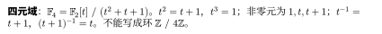
逐句阅读要点
先按原文的分号与句号分开读。下面按相关概念展开条件、记号与结论；遇到公式，先确认变量范围，再看证明中怎样得到等号或蕴含。
1．例题 完整构造四元域
-
取 ，令 。
-
则 ，满足 。
2．定义 除环、四元数与术语约定
-
除环：含幺环 满足 且 ；不要求乘法交换。
-
与域的区别： 为域当且仅当 是乘法交换的除环。本章的“整环”始终要求交换。
-
实四元数：，以 为实向量空间基，并规定
-
规则的范围：上式规定特定基元素的乘积，不表示任意 都满足 。
为什么成立：证明、推导与边界
例题 完整构造四元域
-
二次多项式可约当且仅当有根。
-
代入 、 均得 ，故 不可约，商环确实是域。
-
所有余式次数小于 ，故恰有四个元素。
-
加法逐系数模 ，所以 。
-
乘法先展开再约去：
-
因此 ，，非零乘法群由 生成且阶为 。
-
注意域特征为 ，而元素数为 ；“加四次才首次得到零”是错误理解。
定义 除环、四元数与术语约定
- 共轭与范数：若 ，则 ，。
- 求逆： 时范数平方严格为正，所以 ，左右乘积均为 。
- 不交换：，，故 是除环而不是域。
- 区分群与环： 在乘法下是八阶群；它不是整个 ，也不对加法封闭。
解读34.11 p3-c3-11 · 二次扩张求逆
速查表原文（第11条）
逐句阅读要点
先按原文的分号与句号分开读。下面按相关概念展开条件、记号与结论；遇到公式，先确认变量范围，再看证明中怎样得到等号或蕴含。
1．例题 二次扩张中的求逆与塔式计算
- 在 中求 ，并证明 。
2．例题 二次扩张与四次扩张
- 的 Galois 群为 ； 的 Galois 群为 。
为什么成立：证明、推导与边界
例题 二次扩张中的求逆与塔式计算
-
乘共轭表达式可得 ，故逆为 。
-
一般分母 对非零 不为零，否则会推出 。
-
若 ，平方并比较基 的系数得 与 。
-
要求有理数平方为 ， 要求有理数平方为 ，两者均不可能（比较素数指数奇偶）。
-
所以 不在原二次域，添入它又增加二次，塔式定理给次数 ，基可取 。
例题 二次扩张与四次扩张
-
第一例自同构由 决定。
-
第二例两个符号可独立改变，三个二次中间域分别为 、、，对应三个二阶子群。
解读34.12 p3-c3-12 · 同构例（旧期中题型
速查表原文（第12条）
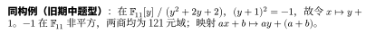
逐句读法
-
先看第一个商：−1 在 F₁₁ 中不是平方，因为非零平方为1、3、4、5、9，故 x²+1 不可约。
-
第二个多项式为 (y+1)²+1，因此同样不可约。
-
令 β=y+1，β²+1=0，代入映射便能从第一个多项式商下降到第二个商。
-
系数固定，ax+b 送到 ay+(a+b)。
-
源是域且映射保1，核只能为0；两边均121元，单射自动满射。
1．定理 最小多项式为什么控制整个单扩张
- 若 在 上代数，最小多项式 次数为 ，则 为 的基。
为什么成立：证明、推导与边界
先按上面的逐句步骤完成本条推导，再核对以下基础结果的条件。
定理 最小多项式为什么控制整个单扩张
-
求值同态 的核为 ：任意湮灭多项式除以 后的余式也湮灭 ，由最小次数只能为零。
-
若 且两个因子次数都更小， 会迫使某因子也湮灭 ，矛盾，故 不可约。
-
所以 已经是域，因而等于 。
-
带余除法给出张成性；若这些幂存在非平凡线性关系，就得到小于 次的湮灭多项式，矛盾，给出线性无关性。
解读34.13 p3-c3-13 · Frobenius gcd
速查表原文（第13条）
逐句阅读要点
先按原文的分号与句号分开读。下面按相关概念展开条件、记号与结论；遇到公式，先确认变量范围，再看证明中怎样得到等号或蕴含。
1．引理 有限域中的 Frobenius 多项式最大公因式
- 在 中，，最大公因式取首一。
2．定理 有限域的子域与 Frobenius
-
含 元子域当且仅当 ，此子域唯一。
-
Frobenius 映射 生成 ，该群为 阶循环群。
为什么成立：证明、推导与边界
引理 有限域中的 Frobenius 多项式最大公因式
-
在代数闭包中，这些多项式导数均为 ，因此无重根。
-
共同根是同时被 次、 次 q-Frobenius 固定的元素；Frobenius 在代数闭包上可逆，ézout 的指数关系使其恰被 次迭代固定。
-
无重根且共同根相同，所以首一 gcd 正是所写多项式。
定理 有限域的子域与 Frobenius
-
子域为方程 的根集。
-
对一般基域 ， 的生成自同构是 。
-
元素的最小多项式由其 Frobenius 轨道给出。
解读34.14 p3-c3-14 · 不可约式的根
速查表原文（第14条）
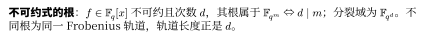
逐句阅读要点
先按原文的分号与句号分开读。下面按相关概念展开条件、记号与结论；遇到公式，先确认变量范围，再看证明中怎样得到等号或蕴含。
1．定理 有限域不可约式的根与分裂域
- 假设： 为首一不可约多项式，， 为它在代数闭包中的一个根。
- 扩张规模：，所以 。
- 全部根： 两两不同，恰是 的全部根。
- 分裂域： 已包含全部根，因而就是 在 上的分裂域；添入一个根就足够。
2．例题 Frobenius 轨道怎样给出最小多项式
- 在 中，，所以轨道长度为 ，最小多项式为 。
为什么成立：证明、推导与边界
定理 有限域不可约式的根与分裂域
-
这些 Frobenius 共轭都满足 ，轨道长度不能小于 ，否则轨道乘积会给低于 次的基域多项式。
-
故 个根全在添一个根所得的域中。
-
对任意 ，取 的乘法群生成元 。
-
若 落在一个真子域，其阶至多 ，矛盾；故其最小多项式次数恰为 。
-
这样证明每个次数都有不可约式，不必凭计数公式的正性“显然”略过。
例题 Frobenius 轨道怎样给出最小多项式
-
若 的首次返回满足 ，则轨道乘积 的系数被 次 Frobenius 固定，因此属于 。
-
任何基域多项式若以 为根，就必须以它全部不同共轭为根，因此次数至少为 。
-
轨道乘积正是最小多项式。
-
所以 中出现的不可约因子次数恰好整除 。
-
例如二元域上的首一三次不可约式有 个，即 与 。
解读34.15 p3-c3-15 · 分解三步
速查表原文（第15条）
逐句阅读要点
先按原文的分号与句号分开读。下面按相关概念展开条件、记号与结论；遇到公式，先确认变量范围，再看证明中怎样得到等号或蕴含。
1．定义 有限域多项式分解的三层任务
- 输入： 中非零多项式 ，其中 ， 为特征。
- 无平方因子分解：分离因子的重数，表示为 ，其中非平凡 首一、无重因子且两两互素。
- 导数检测： 能检测重因子；若 ，则所有非零项的指数均为 的倍数。有限域中系数均有唯一 次根，因此先写 再递归处理 ，重数乘以 。
- 不同次数分解：把无平方因子部分按不可约因子的次数分组，利用 包含恰好那些次数整除 的首一不可约因子。
- 同次数分解：将一组同为 次的不可约因子的乘积进一步拆成各个不可约因子。这一步与前两步的目标不同。
2．引理 有限域中的 Frobenius 多项式最大公因式
- 在 中，，最大公因式取首一。
为什么成立：证明、推导与边界
定义 有限域多项式分解的三层任务
-
含全部次数整除 的首一不可约式各一次，所以与待分解多项式取 gcd，再去掉已知低次数部分，可得到 次部分。
-
奇 时，对由多个 次不可约因子组成的部分，随机 后计算 ：各域分量中的平方/非平方行为可能不同，从而拆开因子。
-
若结果平凡就重试。
-
这是算法机制，实际复杂度还依赖多项式模幂、随机性与系数表示。
引理 有限域中的 Frobenius 多项式最大公因式
-
在代数闭包中，这些多项式导数均为 ，因此无重根。
-
共同根是同时被 次、 次 q-Frobenius 固定的元素；Frobenius 在代数闭包上可逆，ézout 的指数关系使其恰被 次迭代固定。
-
无重根且共同根相同，所以首一 gcd 正是所写多项式。
解读34.16 p3-c3-16 · 15 阶群
速查表原文（第16条）
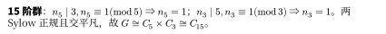
逐句阅读要点
先按原文的分号与句号分开读。下面按相关概念展开条件、记号与结论；遇到公式，先确认变量范围，再看证明中怎样得到等号或蕴含。
1．例题 15 阶群的结构
- 证明每个 阶群为循环群。
2．例题 为什么 p² 阶群交换，为什么 pq 阶群未必循环
- 证明 阶群交换；比较 阶与 阶的 Sylow 计数。
为什么成立：证明、推导与边界
例题 15 阶群的结构
-
且 ，故 ； 且 ，故 。
-
两个正规子群的交为平凡群，换位子同时落在二者中，故彼此交换；其乘积为全群，得到 。
例题 为什么 p² 阶群交换，为什么 pq 阶群未必循环
-
群中心非平凡，所以 是 或 。
-
后一种已经交换。
-
前一种使 为素数阶循环群，设由 生成。
-
任意 ，中心元素可以自由交换位置，故 。
-
这反而推出中心为全群，也说明前一种不可能。
-
阶情形，，两个 Sylow 子群内直积，所以循环。
-
阶情形，，但 可以是 或 ；不能从整数分解 就断言循环。
-
实际上 上映射 的阶为 ，给出非交换半直积 。
解读34.17 p3-c3-17 · Sylow 包含性证明
速查表原文（第17条）
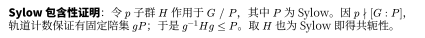
逐句阅读要点
先按原文的分号与句号分开读。下面按相关概念展开条件、记号与结论；遇到公式，先确认变量范围，再看证明中怎样得到等号或蕴含。
1．定理 Sylow 包含性、共轭性与计数的细节
- 每个 子群包含于一个 Sylow 子群；Sylow 子群相互共轭； 且 。
2．定理 Sylow 三定理
- 设 ，。
-
存在 阶子群；
-
每个 子群包含在某 Sylow 子群中，所有 Sylow 子群共轭
-
其数目 满足 且 。
为什么成立：证明、推导与边界
定理 Sylow 包含性、共轭性与计数的细节
包含性：
-
固定 Sylow 子群 ，让任意 子群 左乘作用于 。
-
此集合大小 不被 整除，由类分类方程，存在 使得 模 不为 ，进一步可得 。
-
对所有 成立，等价于 ，即 。
-
若 也是 Sylow，阶数相同使包含变成相等，得到共轭性。
整除：
-
共轭作用下 的稳定子是正规化子 ，所以 。
-
又 ，因此 整除 。
同余：
-
让 共轭作用于所有 Sylow 子群。
-
若 是共同固定点，则 ；于是 是子群，且 是 的幂。
-
Sylow 的最大阶数迫使 ，进而 。
-
所以唯一固定点就是 ，由固定点同余得 。
定理 Sylow 三定理
-
存在性可用子集上的作用和轨道计数证明；让一个 子群作用于 Sylow 子群的陪集，得到包含性与共轭性；再对共轭作用计数得到数目限制。
-
使用时先列出同时满足整除和同余的候选； 当且仅当 Sylow 子群正规。
解读34.18 p3-c3-18 · 有限扩张未必 Galois
速查表原文（第18条）
逐句阅读要点
先按原文的分号与句号分开读。下面按相关概念展开条件、记号与结论；遇到公式，先确认变量范围，再看证明中怎样得到等号或蕴含。
1．例题 非正规扩张为何不能直接套 Galois 对应
- 的次数为 ，但 只有恒等映射。
2．定义 域自同构、Galois 群与固定域
-
是所有逐点固定 的 自同构，运算是复合。
-
对子群 ，固定域 。
-
有限正规可分扩张叫有限 Galois 扩张，此时自同构群记作 。
为什么成立：证明、推导与边界
例题 非正规扩张为何不能直接套 Galois 对应
-
由 Eisenstein 不可约，所以次数为 。
-
任何自同构必须把 映到同一个最小多项式的另一个根。
-
但 ，另外两个根不实，因此只有一个选择。
-
缺失条件是正规性： 在 中有根却没有完全分裂。
-
再添入三次单位根 才得到分裂域。
-
有限 Galois 扩张才有“自同构个数等于扩张次数”以及完整反向对应；一般扩张的自同构可能远少于次数。
定义 域自同构、Galois 群与固定域
-
对称越多，必须同时固定的元素越少，所以 推出 。
-
在 中，只翻转 的二阶子群固定 ：含 或 的系数必须为零。
-
这个具体计算解释了反向对应，而不只是背一个箭头。
解读34.19 p3-c3-19 · 双二次扩张
速查表原文（第19条）
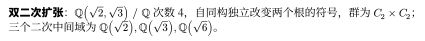
逐句阅读要点
先按原文的分号与句号分开读。下面按相关概念展开条件、记号与结论；遇到公式，先确认变量范围，再看证明中怎样得到等号或蕴含。
1．例题 二次扩张与四次扩张
- 的 Galois 群为 ； 的 Galois 群为 。
2．例题 二次扩张中的求逆与塔式计算
- 在 中求 ，并证明 。
为什么成立：证明、推导与边界
例题 二次扩张与四次扩张
-
第一例自同构由 决定。
-
第二例两个符号可独立改变，三个二次中间域分别为 、、，对应三个二阶子群。
例题 二次扩张中的求逆与塔式计算
-
乘共轭表达式可得 ，故逆为 。
-
一般分母 对非零 不为零，否则会推出 。
-
若 ，平方并比较基 的系数得 与 。
-
要求有理数平方为 ， 要求有理数平方为 ，两者均不可能（比较素数指数奇偶）。
-
所以 不在原二次域，添入它又增加二次，塔式定理给次数 ，基可取 。
解读34.20 p3-c3-20 · 三次例
速查表原文（第20条）
逐句读法
-
三次多项式可约当且仅当有一次因子，也就是有根。
-
因此只需研究 x³=2。
-
在102阶循环群里，立方映射的核有 gcd(3,102)=3 个元素，像由满足 a³⁴=1 的元素组成。
-
计算 2⁸≡50、2¹⁶≡28、2³²≡63，故 2³⁴≡63·4≡46≠1（模103）。
-
所以无根，三次式不可约，商为103³元域。
1．引理 域上多项式的带余除法与根数界
- 对象： 为域，，。
- 存在与唯一性：存在唯一 ，使 ，且 或 。
- 为什么需要域：当 时，以 为系数消去最高次项；非零首项系数在域中有逆元。余式次数严格下降，故过程有限步终止。
- 因式定理：对 ，。
- 根数界：若 且 ，则 。零多项式不受此结论限制。
为什么成立：证明、推导与边界
先按上面的逐句步骤完成本条推导，再核对以下基础结果的条件。
引理 域上多项式的带余除法与根数界
-
除以 x-a 的余式是常数 ，得到因式定理；每取出一个不同根就除去一个线性因子，次数减 ，归纳得界。
-
在有零因子的环中可能失败，例如模 的 有 、、、 四个根；此时不能按域的规则约去非零因子。
解读34.21 p3-c3-21 · 高次反例
速查表原文（第21条）
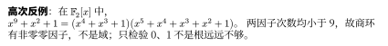
逐句读法
-
先在 F₂ 中把所给两个因子逐项相乘；重复出现的单项式成对抵消，留下 x⁹+x²+1。
-
两个因子的次数为4和5，都小于9，所以在模原多项式的商中均非零，而它们的积为零。
-
这是明确的非零零因子对，直接证明商不是域。
-
检验0和1只排除一次因子，不能排除这里的四次因子。
1．引理 域上多项式的带余除法与根数界
- 对象： 为域，，。
- 存在与唯一性：存在唯一 ，使 ，且 或 。
- 为什么需要域：当 时，以 为系数消去最高次项；非零首项系数在域中有逆元。余式次数严格下降，故过程有限步终止。
- 因式定理：对 ，。
- 根数界：若 且 ，则 。零多项式不受此结论限制。
2．定理 素理想与极大理想判别
- 共同前提： 为交换含幺环， 且 ，因此商环中的 。
- 素理想判别： 为素理想 为整环。
- 极大理想判别： 为极大理想 为域。
- 推论：每个极大理想都是素理想，因为每个域都是整环；反向一般不成立。
为什么成立：证明、推导与边界
先按上面的逐句步骤完成本条推导，再核对以下基础结果的条件。
引理 域上多项式的带余除法与根数界
-
除以 x-a 的余式是常数 ，得到因式定理；每取出一个不同根就除去一个线性因子，次数减 ，归纳得界。
-
在有零因子的环中可能失败，例如模 的 有 、、、 四个根；此时不能按域的规则约去非零因子。
定理 素理想与极大理想判别
- 素性与无零因子：；。所以商环中零乘积至少一个因子为零，恰好是素理想定义。
- 极大性推出非零元可逆：取 ，即 。理想 严格包含 ，由极大性等于 ，于是存在 使 。取商得到 。
- 商域推出极大性：若 ，取 。商环中 可逆，故存在 使 。又 ，所以 ，进而 。
- 反向不成立的例子： 是整环但不是域，所以 素而不极大。